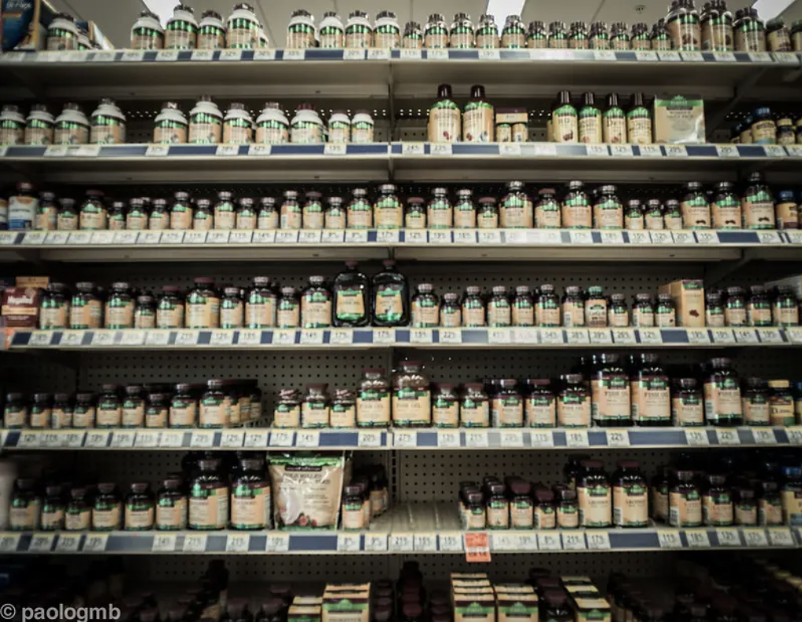

December 26th, 2020
As previously stated, part of working in retail is dealing with thieves, no matter where you work, it’s bound to happen. How you deal with it is another story.
In the old days, dumpster divers were the main source of thieves that we came across each day. Dumpster divers would dig in the trash, find a crumpled up receipt and then come into the store. They would then proceed down the aisles looking for the highest priced item on the receipt and take it from the shelf, bringing it to the cashier and asking to speak to a manager. They would tell a tale of how this wasn’t what they wanted or that they were told by their doctor not to use it, and hope to get their money back. Most of the time, we were forced to hand over the cash or store credit for the item, knowing full well that it was not purchased, but there were times when we had the upper hand and would refuse them the chance for quick cash.
customer: I’d like to return this pregnancy test.
Me: Did you say pregnancy test?
customer: Yes, it was not what I needed.
Me: (taking a look at the receipt and seeing that it was for automotive parts from an automotive store) I’m sorry but I can’t take this back.
customer: But I have a receipt
Me: Yes, you do, for automotive parts. This is a pregnancy test and the box is empty.
customer: Well I used it and I’d like my money back.
Me: So where is the test? (Now mind you, I was not going to refund the purchase price for an empty box, especially with a receipt from an automotive store, but I wanted to see how far things would go with this customer)
customer: Well I took it and didn’t get the answer I was looking for, so I want to return it.
Me: Do you have the test?
customer: I threw it away, it was obviously defective.
Me: (By now, I should mention that the person trying to do the return was obviously pregnant and didn’t need a test to confirm that fact, when anyone with two good eyes could tell that she was pregnant) I can’t refund this empty box, with this receipt.
customer: So if I get another receipt can I return it?
Me: We would need the test in the box with the proper receipt in order to do the return.
customer: Never mind (putting the box and receipt back in her purse and walking out the door).
Woman buying pregnancy test. picture taken by Greg Rivers.>
Then there was the man who came in with a plastic bag full of bottles and tubes, all of them used, some of which bore the name of one of our competitors.
customer: (dumping bag on the counter) Id like to return these
Me: Do you have a receipt?
customer: My grandmother died and she doesn’t need them anymore.
Me: Do you have a receipt for the items? I would need to see proof of purchase at this store
customer: My grandmother died and she doesn’t need these anymore. I don’t have a receipt, she must have thrown it out
Me: Some of these are not even from our store (and by store I meant the name on the front of the building).
customer: Well, she told me she got them here, and she just wants to get the money back
Me: So your dead grandmother told you that she got these here and wants to get the money back?
customer: Yes.
Me: Well, she would have to come into the store and bring the receipt with her and we will see what we can do
customer: So I can’t get the money back?
Me: No, I’m sorry, she would have to come in with her receipt and we will see what we can do for her.
customer: (grumbles as he leaves the store with his mixed bag of ointments and pills).
a store. picture taken by Greg Rivers.>
Finally there was the woman who brought a bottle of bleach into the store and asked to speak to a manager. I got her a manager (seeing that I had given up the title and the headaches that came with it) and she began to tell her story.
customer: I’d like to return this bottle of bleach.
Manager: What is wrong with it?
customer: Someone urinated in the bottle before I bought it and when I poured it in my washing machine, it ruined my clothes.
Manager: So you’re telling me that you bought this bottle of bleach here, opened it up at home, poured it in your washing machine and then found out that it was not bleach but rather urine?
customer: Yes.
Now by this time, the manager had had enough of the woman, especially when you consider that she had taken an empty bottle of bleach from home, urinated in it, and had the audacity to bring it back to the store with her tale of being the victim of some cruel prank.
Manager: Did you want to exchange this bottle for a new one?
customer: No, I’d just like to get my money back.
Manager: Okay, and he refunded her $1.99.
So basically, this woman had gone through the trouble of finding a bottle, urinating it in, bringing it back to the store, all to get less than 2 dollars in return for her efforts. If only she had put this much time and effort into something more worthwhile, who knows what she would accomplish in life. Retail, everyone should get the chance to work in it just once and maybe people would behave better when in stores, or not.